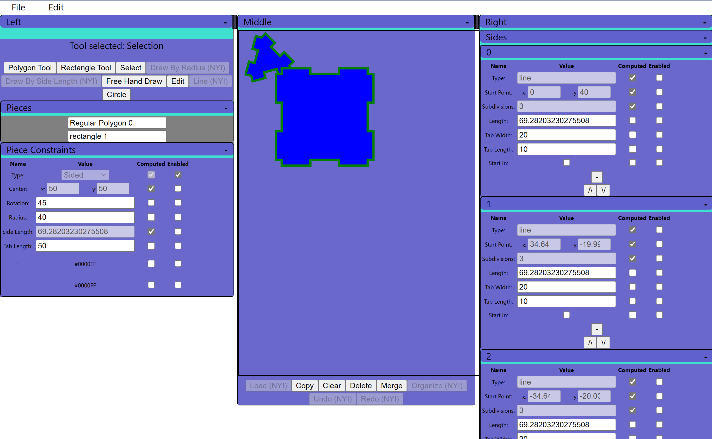
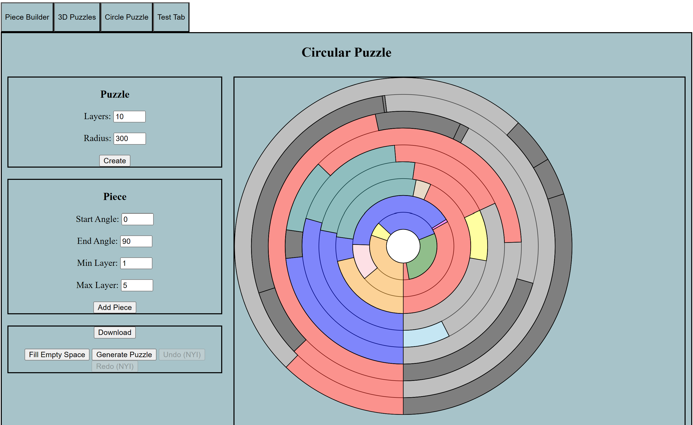

Puzzles
When I first started creating puzzles, I made them all with a pencil and paper. This was very time consuming. Now I have made a puzzle creation tool to do all the heavy lifting. It still takes some work to create a puzzle, but the design of it is a little bit easier. I still have to cut out the puzzles myself.

Description: A tool for creating puzzles
Here is a link to the Github repo: https://github.com/gregv21v/puzzle-generator2

Description: A tool for creating puzzles. This tool is outdated, but its still useful for creating circular puzzles
Here is a link to the Github repo: https://github.com/gregv21v/Puzzles